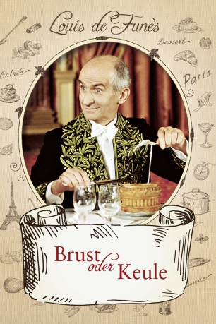

#3447 Brust oder Keule
 
 IMDB-Wertung: 7.3 / 10
IMDB-Wertung: 7.3 / 10  Metascore: 0
Metascore: 0 
Charles Duchemin, Restaurantkritiker und Herausgeber des "Guide Duchemin", ist die letzte Bastion des guten Geschmacks und der feinen Küche. Sein Erzfeind Jacques Tricatel hingegen betreibt eine Fast-Food-Kette, in der den Franzosen künstlich hergestellte Lebensmittel serviert werden. Duchemin fühlt sich herausgefordert. Französische Kultkomödie mit Louis de Funès.
Jahr: 1976
Dauer: 105 Minuten
FSK: 6
Land: Frankreich Studio: Tobis FilmkunstTonspuren:
Untertitel:
Auflösung: 1080p (1920x816) Größe: 10342 MB
Genre: Komödie, Familie
Regisseur: Claude Zidi
Drehbuch: Eric-Emmanuel Schmitt
Soundtrack:
Darsteller:
 Louis de Funès als Charles Duchemin
Louis de Funès als Charles Duchemin Julien Guiomar als Jacques Tricatel
Julien Guiomar als Jacques Tricatel- Jean Martin als Le médecin
 Marcel Dalio als Le tailleur de Duchemin
Marcel Dalio als Le tailleur de Duchemin Marie-Anne Chazel als Une amie de Gérard / Gérard's friend , uncredited
Marie-Anne Chazel als Une amie de Gérard / Gérard's friend , uncredited Gérard Lanvin als Un membre du cirque , uncredited
Gérard Lanvin als Un membre du cirque , uncredited- Coluche als Gérard Duchemin
- Ann Zacharias als Marguerite #2 - la secrétaire intérimaire
 Claude Gensac als Marguerite #1 - la secrétaire de Duchemin
Claude Gensac als Marguerite #1 - la secrétaire de Duchemin- Georges Chamarat als Le doyen des académiciens
- Fernand Guiot als Dubreuil - un collaborateur de Duchemin
- Gérard Boucaron als Ficelle
- Antoine Marin als Un collaborateur de Duchemin
- Yves Afonso als Le faux plombier
- Raymond Bussières als Henri - le chauffeur de Duchemin
- Philippe Bouvard als Philippe Bouvard - l'animateur du débat
- Vittorio Caprioli als Vittorio - le patron d'un restaurant
- Daniel Langlet als Lambert - l'adjoint de Tricatel
- Martin Lamotte als Roland - le directeur d'un cirque
- Paul Bisciglia als Le bagagiste
- Robert Lombard als Le patron de la 'Coquille d'or'
- Pierre Forget als Le patron de 'L'auberge de la truite'
- Aurora Maris als Gina
- Eduardo Bergara Leumann als
- Gérard Lorin als
- Albert Michel als M. Morand - un employé de Duchemin
- Bob Morel als
- Max Montavon als M. Godefroy
- Pierre Decazes als Le patron de l'hôtel
- Auguste Geronimi als
- Peter Rockbertys als
- Gérard Victor als
- Mac Ronay als Un sommelier
 Dominique Davray als L'infirmière musclée
Dominique Davray als L'infirmière musclée- Marie Frey als
- Catherine Meurisse als
- Maurice Vallier als Un collaborateur de Duchemin
- Dyanik Zurakowska als
- François Viaur als Un sommelier
- André Clos als
- Guy Truffert als
- Charles Vinadel als
- Jean Amadou als Récitant / Narrator , uncredited
- François Guillaume als Le reporter , uncredited
 Jacques Mathou als (uncredited
Jacques Mathou als (uncredited- Georges Nojaroff als Le serveur bourré de tics , uncredited
Datei: X:\Person\Louis de Funès\Brust oder Keule (1976, FSK6, 1920x816).mkv seit 08.04.2016
Festplatte: HD Collection-7+mehr(A-Z)+Person
 Es gibt insgesamt 33 Filme in der Gruppe 'Person\Louis de Funès'
Es gibt insgesamt 33 Filme in der Gruppe 'Person\Louis de Funès'